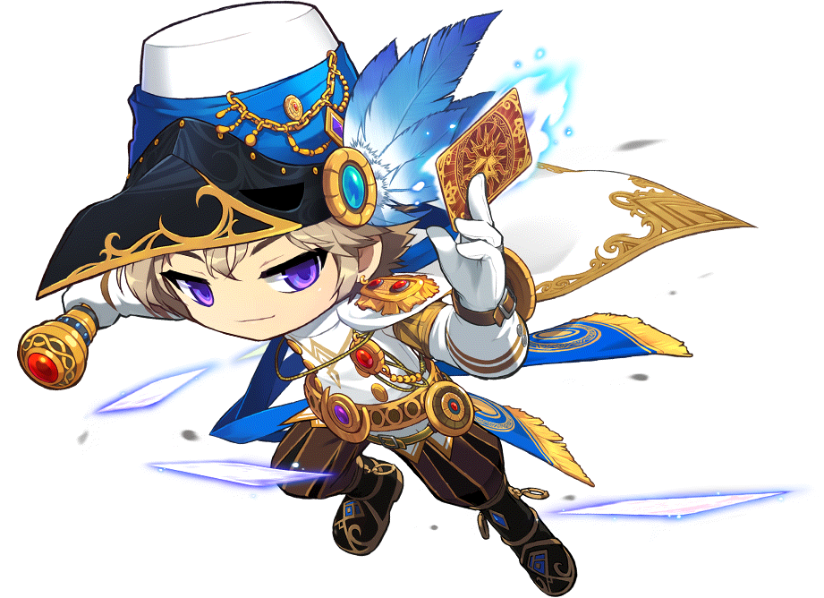

팬텀
- 개요
- 기본 외형
- 스토리 캐릭터로서
개요
기본외형
워낙 고급스럽게 생긴 의상이어서 기본 일러스트외에도 몇몇 캐시로 나온 아류작(...)이 존재하는데
영웅 70 육성 이벤트때 배포한 붉은색의 가넷 레이븐 페르소나와 임페리얼 가넷 슈트, 로얄 스타일로 풀렸던 할로윈 팬텀이 입고 있었던 할로윈 팬텀 세트,
히어로즈 오브 메이플때 판매한 미스틱 팬텀 세트가 존재한다. 가넷과 할로윈 세트는 색만 바뀐 수준이어서 대용품으로 괜찮지만 히오메 미스틱 세트는 도트를 새로 찍었는데 상당히 난잡해 보인다는 단점이 있다.
로얄로 상당한 물량이 확보되어 남아 있는 할로윈 세트와 달리 가넷 세트는 풀린지가 오래라서 아주 귀한 편.
이 외에도 히어로즈 오브 메이플 당시 영웅들을 키우면 줬던 깃털모양 머리 장식 히어로즈 페더와 아리아의 반지가 존재한다.남성 여성 모두 상당히 도트가 잘 뽑혀나와서 팬텀의 인기를 올리는 요인 중 하나다.
여팬텀 역시 남팬텀만큼 상당히 자주 보이며 2차 창작에서도 역시 인기가 많다.
스토리 캐릭터로서